##A Quarto and GitHub Pages Guide for the noob bloggers
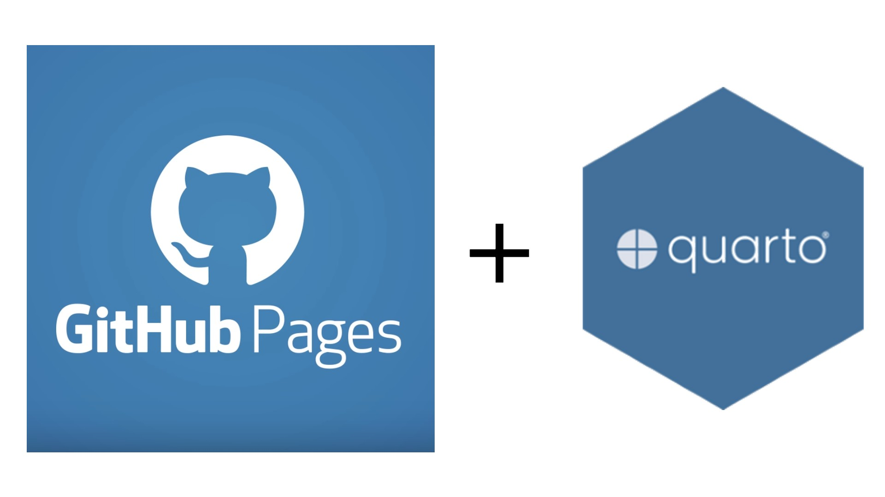
This article serves as a compilation of online resources for Git, GitHub and Quarto, in order to inform readers eager to enter the world of blogging using GitHub pages. ### Git and Github *** To get started with Git and GitHub, the following resources are recommended:- The Odin Project - Introduction to Git
- The Odin Project - Foundations in Git
- The Odin Project - Commit messages
Configuring Secure Shell (ssh)
To configure ssh (Secure Shell, a newly adopted path for authentication by Github and Git) follow the following steps.
git config --global user.name <YourName>
git config --global user.email <you@example.com>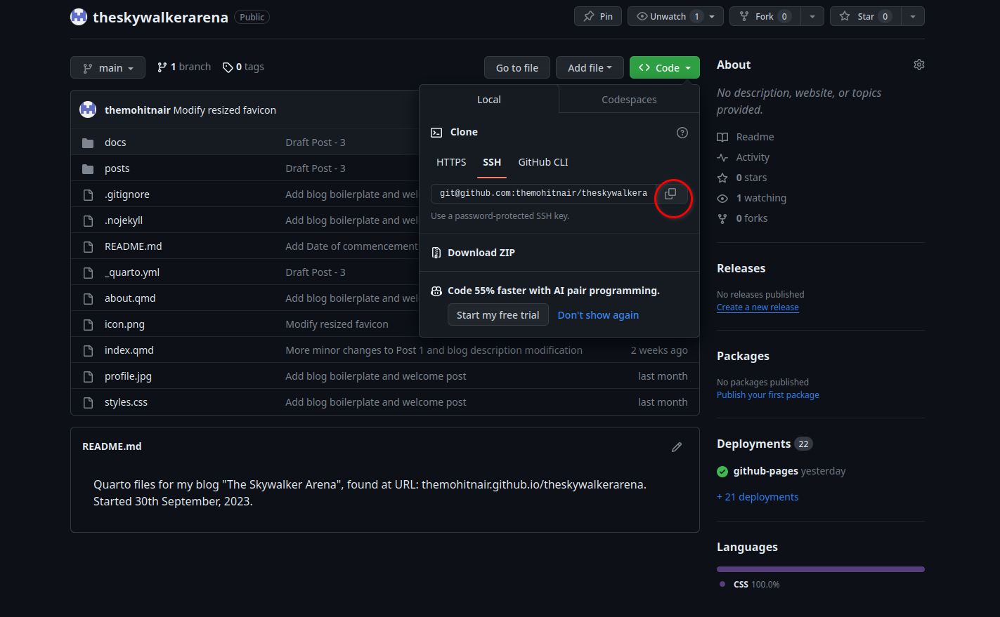
Click on the green Code button, select SSH if not already selected, and copy the address displayed there.
Run the command:
git clone <Paste what you copied>Getting a warning with: “The authenticity of host ‘github.com’ can’t be established.” should not worry you. If this is the first time you connect to this server, you will get this warning. Select “yes” and it won’t bother you again.
Generating an SSH key We will be using a tool called ssh-keygen. So open a terminal and run this command:
ssh-keygenFirst, you will be asked about the location where the keys should be stored. By default, your user folder will contain a folder called .ssh. Leave it as it is and hit the Enter key. Next, you will be asked to set a password to protect your private key. Without a password, anyone obtaining your private key can impersonate you. You now have two files called id_rsa and id_rsa.pub which are your private and public keys respectively (for encryption). Open your public key (id_rsa.pub) from the directory you saved it in and copy the entire content of the files.
Connecting your Git to your GitHub using SSH Click on your profile on the top right corner of your GitHub home page.
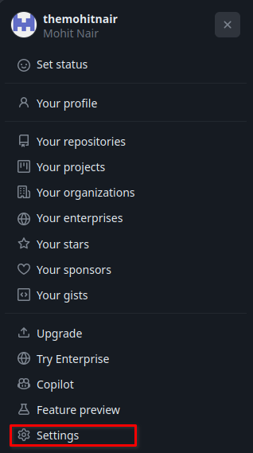
Go to settings > SSH and GPG keys. Click on ‘New SSH key’ and paste the copied content into the large text box. Name your key.
Clone your GitHub repository using the command used previously Step 6 — Cloning a GitHub repository (again)
Now it is time to rerun the clone command, and it should work.
Now Git is integrated with any tools or code editors that you may be using. You can push and pull changes from GitHub without issues.
git clone <SSH link copied from code of your GitHub repo as done in Step 2>This should work as intended.
Quarto
To get started with Quarto, the following link is recommended: Getting Started with Quarto. Moreover, the documentation in Quarto is fairly simple and easy to understand. So please use the documentation when you face any kind of problem. Refer to this link to completely learn how authoring in Quarto works: Authoring in Quarto. For a complete view of their documentation, please visit: Quarto Documentation
Setting up a Blog in Quarto
This guide uses VSCode for setting up and authoring blogs using Quarto. You can use other editors/tools to author as well.
Create a new repository in your GitHub and give it a name that’s short and simple because that will later be included in the URL of your blog if you choose to publish it on GitHub.
In your terminal, navigate to the folder you want to your blog to be in. Run
git clone <ssh URL of your repo>to clone the newly created repository on to your computer.
In VSCode, install the “Quarto” extension. Then, open the new repository’s folder. Press ctrl + shift + p to open the command palette and search for “Quarto: Create Project”.
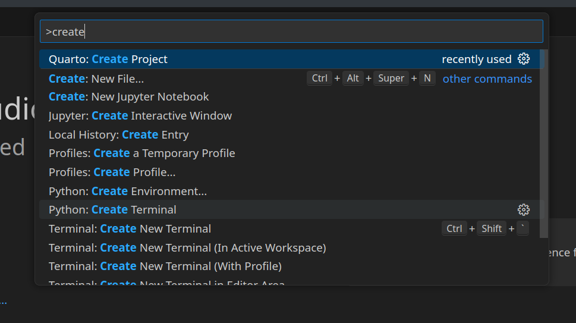
Choose “Blog Project” among the options.
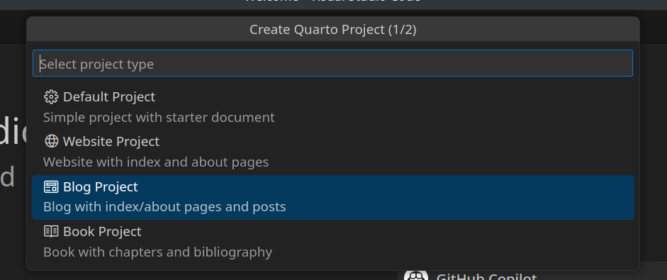
And select the folder of your repository when asked for location of the project. You now have a bare-bones blog up and running! Type quarto preview in the terminal (make sure you are inside the repo) to see how your blog looks!
To create a new post, first create a new directory (folder) inside the posts directory. Then, create a new file named index.qmd. You should write your post in this file in the markdown format. Refer here to know more.
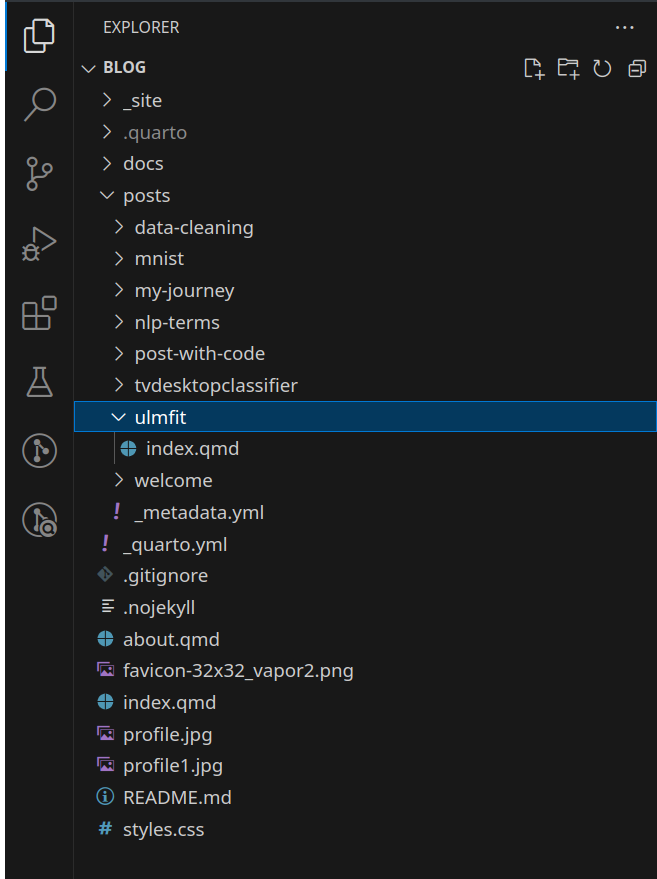
You can add both dark and light themes to your blog by editing your _quarto.yml file like so:
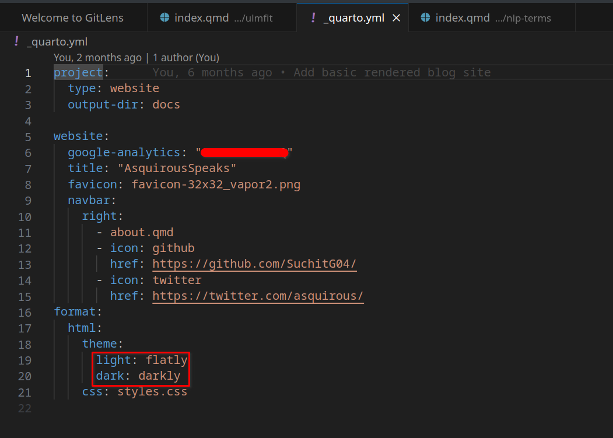
Please go through the documentation for more such tricks and customizations.
After editing your blog, go to the directory of the blog using cd command in your system terminal or the vscode terminal (here, the directory named ‘theskywalkerarena’ is the directory of the blog, and ‘Skywalker’ is the parent directory of the blog directory)
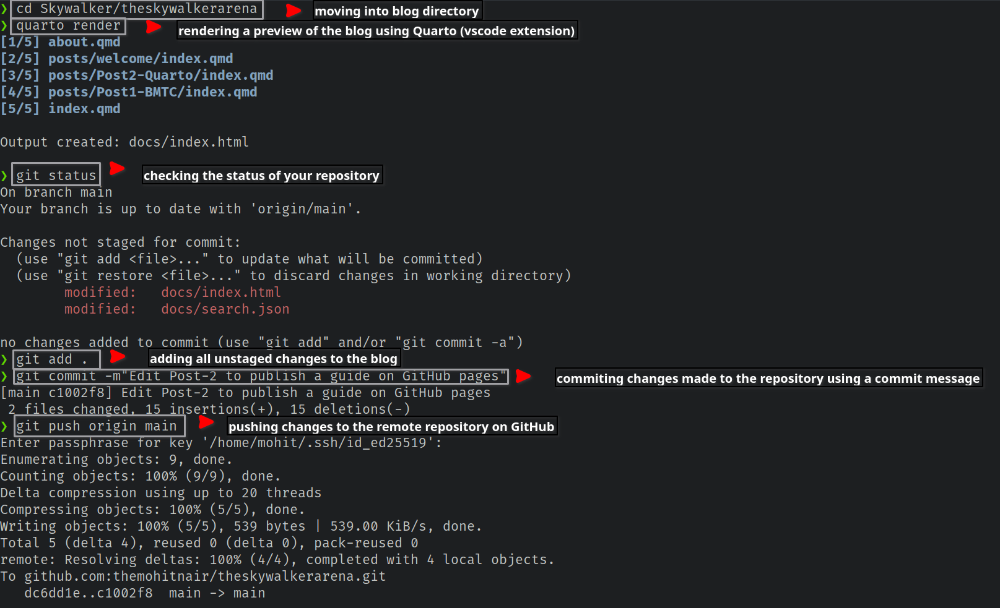
(Each line beside ‘>’ is a command given via terminal in the above picture)
After pushing your changes, go to GitHub and to your remote blog repository, and click ‘Settings’ on the upper bar.
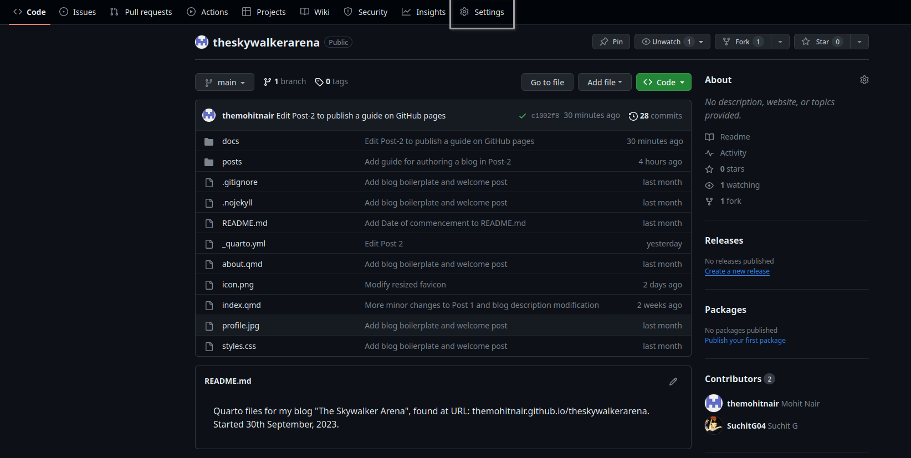
Now, enter your directory to make two important changes: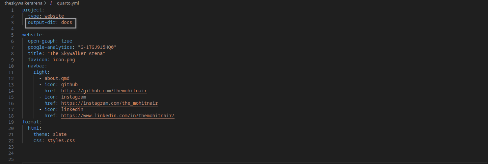
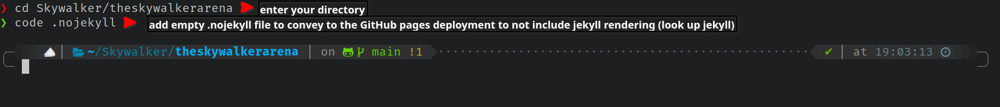
Click ‘Pages’ on the side menu.
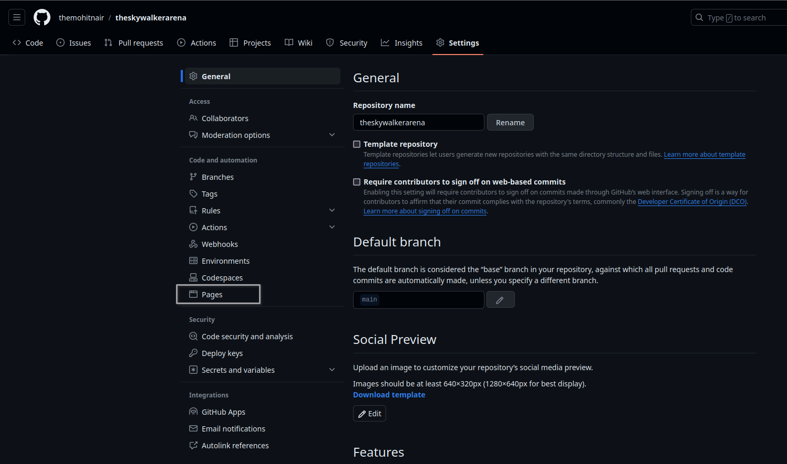
Under ‘Build and Deployment’ click on the Drop down menu of the directory your blog is being deployed from, and select /docs instead of /(root), and click on ‘Save’.
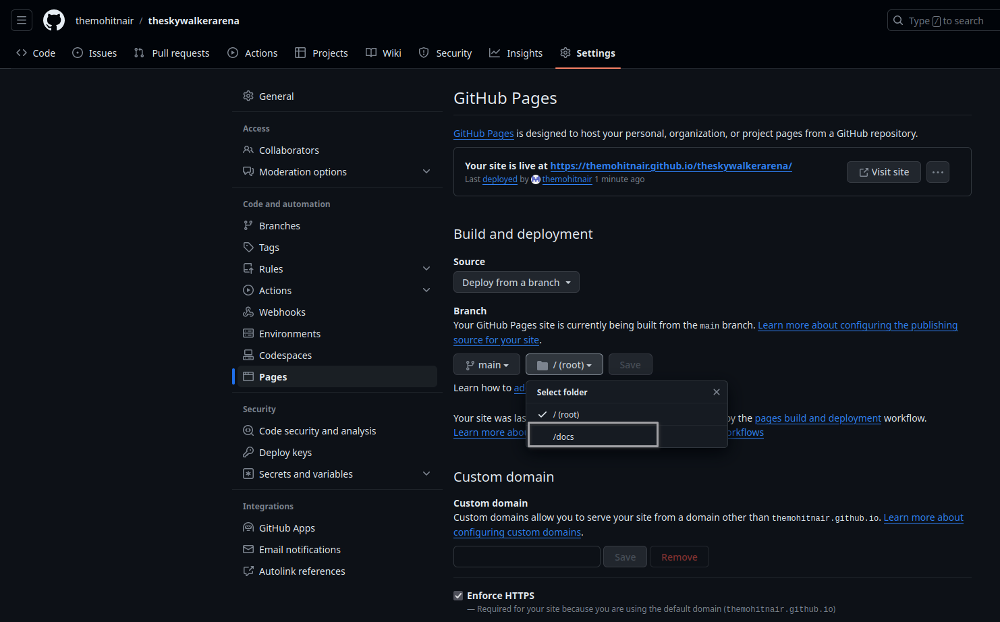
After following the above steps, go to ‘Actions’ on the upper bar of your repository.
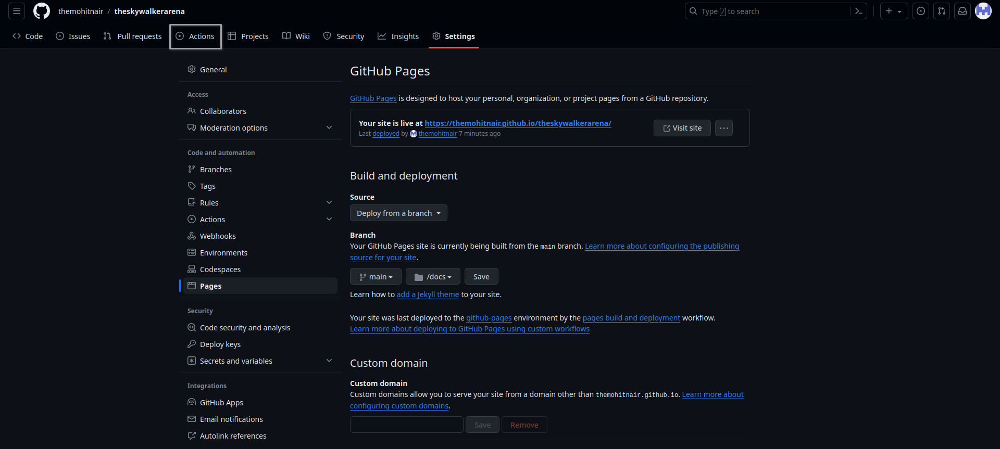
Here you can see the real-time deployment of your blog online. The URL of your blog is as follows: [Your GitHub username].github.io/[Your blog directory]
Voila! You have a blog which is up and running! Be sure to share this blog to those in need.